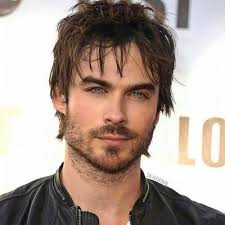

|  | Damon SalvatoreDamon Salvatore is one of the two main male protagonists of The Vampire Diaries. Damon was a 178-year-old vampire and a distant descendant of Silas. |
Damon Salvatore Was Stuck at 25 For 178 Years He died with Katherine's blood in his system on September 25, 1864, which was how he transformed into a vampire. His brother, Stefan, encouraged him to complete the transition by feeding on human blood, which was a grudge that Damon held against him for most of their life.
Contact meStefan is the younger brother of Damon. The Salvatore brothers, Stefan and Damon, were human. They were very close and were best friends in life. Damon always confided and trusted in Stefan and they always defended each other, especially in front of their father.
Damon gradually involved himself in the lives of many people in Mystic Falls by developing friendships with several humans. After spending time with Elena Gilbert, Damon becomes more empathetic and falls deeply, madly and passionately in love with her. He always puts her safety first before anyone else, even his.
| Person | Relation |
|---|---|
| Stefen | Brother |
| Elena | Girlfriend |
| Bonnie | Best friend |
| Caroline | A Friend |
| Klaus | Villain |
| Skill | Rating |
|---|---|
| Strength | ⭐⭐⭐⭐⭐ |
| human interactions | ⭐ |
| Confidence | ⭐⭐⭐⭐⭐ |